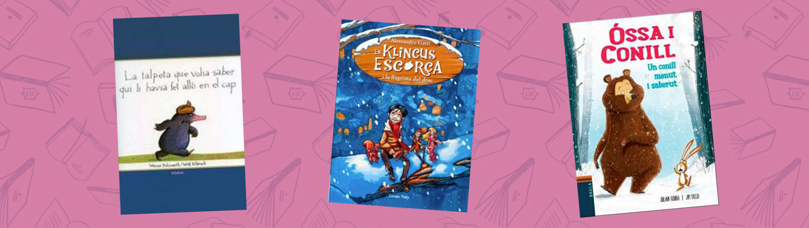

Superlectors 2021 ja ha finalitzat!
Durant dos mesos hem estat preparant la festa del 30é aniversari de la Biblioteca Marian Colomé de Gavà. Entre 34 nens i nenes hem llegit més de 250 llibres que ha permès omplir el pastís d’espelmes i hem resolt més de 40 reptes. El regal ha estat magnífic amb un munt de recomanacions fetes. I tot ha culminat amb una gran festa on ho hem passat genial, petits i grans!El Superlectors ha acabat, però no patiu! A les Biblioteques de Gavà us esperen un bon grapat de personatges i d’aventures a tots els llibres i contes que hi trobareu. Gràcies per haver-hi participat i us encoratgem a que continueu llegint... però també escrivint les vostres pròpies aventures i fer volar la imaginació.
Us deixem amb un vídeo de la festa. Fins aviat!
Últimes notícies
29/11/2021
Postals i més postals de felicitació ens estan arribant i el taulell el tenim tot decorat!
Encara no has vingut a fer la teva, vine i penja-la!
19/11/2021
El taulell d’informació de la biblioteca acull les postals de felicitació que estan començant a arribar.
Encara no has vingut a fer la teva, vine i juga l’últim repte!
15/11/2021
Ja tenim aquí el darrer dels reptes!! Del 15 al 26 de novembre.
Participa fent clic aquí o dins de la pestanya del menú "reptes"
12/11/2021
Més i més lectures proposades pels nostres superlectors, no te les perdis fent clic aquí o dins de la pestanaya del menú "recomanacions"
8/11/2021
Mireu el conte col·laboratiu que hem creat amb la participació de 8 superlectors engrescats en el repte 2 que us vam proposar.
8/11/2021
Ja ha començat el tercer repte del 2 al 12 d'octubre.
Participa fent clic aquí o dins de la pestanya del menú "reptes"
1/11/2021
Els superlectors i les superlectores continuen ajudant-nos amb els preparatius de l’aniversari.
Mireu com portem el pastís i les aportacions per al regal!! Encara no has vingut, t’hi esperem!
1/11/2021
No us perdeu les darreres recomanacions que fan els superlectors fent clic aquí o dins de la pestanaya del menú "recomanacions"

Superlectors, per sempre! Dos exsuperlectores ens expliquen el record del seu pas pel joc i com ho vivien.
25/10/2021
Ei, tenim més aportacions per al regal de la biblioteca! No us perdeu les següents recomanacions que fan els superlectors fent clic aquí o dins de la pestanaya del menú "recomanacions"

18/10/2021
Comença el segon repte del 18 al 29 d'octubre. Participa fent clic aquí o dins de la pestanya del menú "reptes"
15/10/2021
Ja tenim les primeres recomanacions dels superlectors més agosarats. No us les perdeu fent clic aquí o dins de la pestanaya del menú "recomanacions"
11/10/2021
Ja ha començat el joc! Els superlectors Xela i El Vampir dels Llibres, de 8 anys tots dos, han estat els primers en inaugurar la decoració del pastís i l’aportació per al regal. A la resta de superlectors i superlectores, us hi esperem!
10/10/2021
GavàTV visita la biblioteca pel seu 30è aniversari i la nova edició de Superlectors!
Veure vídeo.
04/10/2021
Comença el primer repte del 4 al 15 d'octubre.
Participa fent clic aquí o dins de la pestanya del menú "reptes".
El Superlectors 2021 ja està en marxa! Mireu el pastís que ens han portat a la biblioteca.